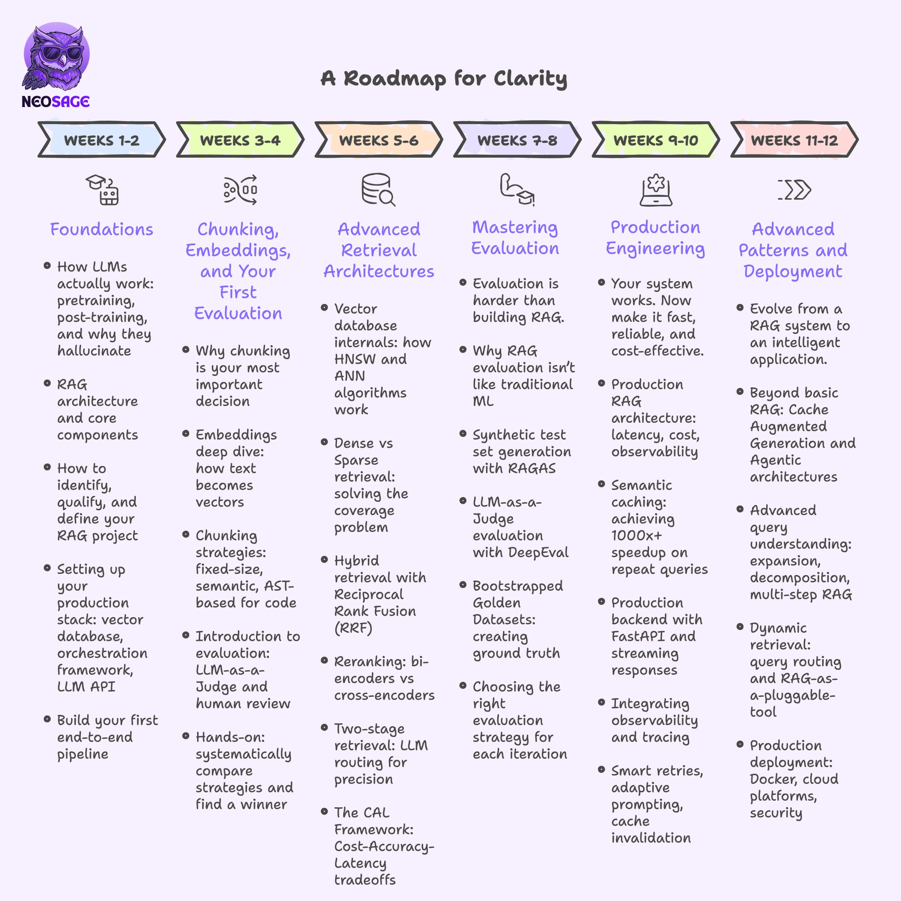
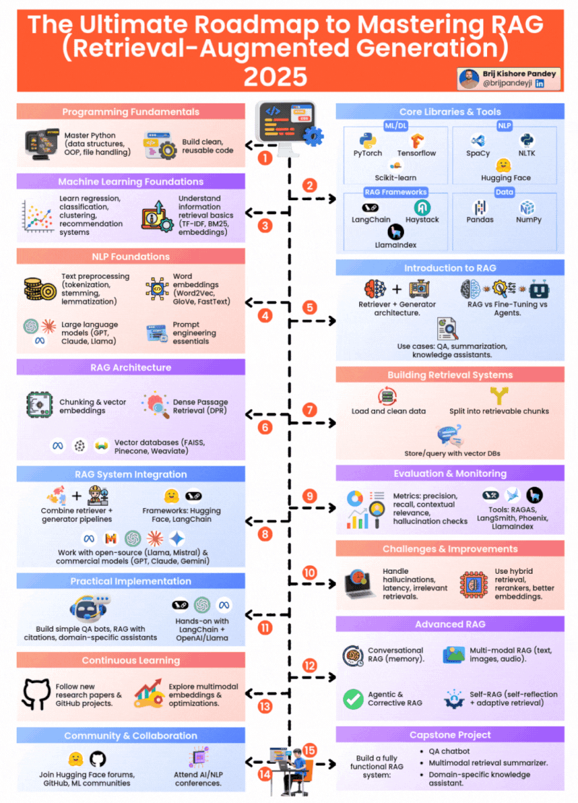

RAG Mastery Tree Roadmap
A Complete 6-Module Progression from Foundations to Production RAG
✔ Module 1: Foundations & Setup
- Environment: UV Package Manager, Anaconda, VS Code
- Libraries: LangChain, LlamaIndex, PyPDF
- Concepts: Open-Book Analogy, Prompting vs Fine-Tuning vs RAG, Business & Privacy Impact
↓
✔ Module 2: Ingestion & Processing
- Parsing: PDFs, Docx, CSV/Excel/JSON, SQL DBs
- Chunking: Fixed-Size, Hierarchical, Semantic
- Pipeline: Raw Data ➔ Load ➔ Chunk ➔ Embed
↓
⚡ Module 3: Embeddings & Vector DBs
- Embeddings: Dense Vectors, Cosine / Dot Product
- Models: SentenceTransformers, OpenAI, Gemini
- Local DBs: FAISS, ChromaDB
- Cloud DBs: Pinecone, Qdrant, Weaviate
↓
🔒 Module 4: Retrieval & Generation
- Retrieval: Semantic Search, Top-K Extraction
- Augmentation: Context Injection & Grounded Output
- Re-ranking: BM25 + Vector Hybrid, Cross-Encoders
↓
🔒 Module 5: RAG Architectures
- Baseline: Naive RAG, Memory, Attention Patterns
- Self-Correction: Adaptive RAG, CRAG, Self-RAG
- Complex: Agentic RAG, Graph RAG, Multimodal RAG
- Hybrid AI: Neural + Rule-based logic
↓
🔒 Module 6: Eval & Production
- Evaluation: Ragas/TruLens, Faithfulness, Relevance
- Observability: LangGraph, FastAPI/Streamlit
- Optimization: Token Budgeting, Explainable AI (XAI)


RAG Mastery Tree Roadmap
Full Depth Module & Concept Diagram Breakdown
┌──────────────────────────────────────────────┐
│ RAG MASTERY TREE ROADMAP │
└──────────────────────┬───────────────────────┘
│
┌──────────────────────────────────────┴───────────────────────────────────────┐
│ │
▼ ▼
┌────────────────────────────────────────┐ ┌────────────────────────────────────────┐
│ MODULE 1: FOUNDATIONS & SETUP │ │ MODULE 2: INGESTION & PROCESSING │
└───────────────────┬────────────────────┘ └───────────────────┬────────────────────┘
│ │
├─ Environment & Tooling ├─ Document Loaders & Parsing
│ ├── UV Package Manager Setup │ ├── PDFs, Word (.docx)
│ ├── Anaconda & VS Code Setup │ ├── CSV, Excel, JSON Files
│ └── Essential Libraries │ └── SQL Databases
│ (LangChain, LlamaIndex, PyPDF) │
│ ├─ Text Chunking Strategies
├─ Core Concepts │ ├── Fixed-Size Chunking (Tokens/Chars)
│ ├── What is RAG? (Open-Book Analogy) │ ├── Hierarchical Chunking (Headers/Paras)
│ ├── Prompt Engineering vs Fine-Tuning │ └── Semantic Chunking (By Topic/Meaning)
│ │ vs RAG │
│ └── Business Impact & Privacy Benefits └── Practical Ingestion Pipeline (Offline)
Raw Data ──► Load ──► Chunk ──► Embed
│
┌───────────────────────────────────────┴───────────────────────────────────────┐
│ │
▼ ▼
┌────────────────────────────────────────┐ ┌────────────────────────────────────────┐
│ MODULE 3: EMBEDDINGS & VECTOR DBS │ │ MODULE 4: RETRIEVAL & GENERATION │
└───────────────────┬────────────────────┘ └───────────────────┬────────────────────┘
│ │
├─ Vector Embeddings ├─ Retrieval Phase (Online)
│ ├── Understanding Dense Vectors │ ├── User Query Embedding
│ ├── Vector Mathematics & Distance Metrics │ ├── Semantic Similarity Search
│ │ (Cosine Similarity, Dot Product) │ └── Extract Top-K Context Chunks
│ └── Embedding Models │
│ ├── HuggingFace SentenceTransformers │ Prompt Augmentation & LLM Generation
│ └── OpenAI & Gemini Embeddings │ ├── Inject Context + Query into Prompt
│ │ └── LLM Generates Grounded Answer
└─ Vector Databases │
├── In-Memory/Local Stores (FAISS, ChromaDB)└─ Hybrid & Re-ranking Strategies
└── Production/Cloud Stores ├── Hybrid Search (BM25 Keyword + Dense Vector)
(Pinecone, Qdrant, Weaviate) └── Cross-Encoder Re-Ranking Models
│
┌───────────────────────────────────────┴───────────────────────────────────────┐
│ │
▼ ▼
┌────────────────────────────────────────┐ ┌────────────────────────────────────────┐
│ MODULE 5: RAG ARCHITECTURES │ │ MODULE 6: EVAL & PRODUCTION │
└───────────────────┬────────────────────┘ └───────────────────┬────────────────────┘
│ │
├─ Baseline & Contextual Patterns ├─ Evaluation & Guardrails (Ragas/TruLens)
│ ├── Standard/Naive RAG │ ├── Faithfulness (Hallucination check)
│ ├── RAG with Memory (Short/Long-term) │ ├── Context Precision & Recall
│ └── Attention-based RAG │ └── Answer Relevance
│ │
├─ Advanced & Self-Correcting Patterns ├─ Observability & Frameworks
│ ├── Adaptive RAG (Dynamic Query Routing) │ ├── Orchestration (LangGraph state machines)
│ ├── Corrective RAG (CRAG) │ └── UI/APIs (FastAPI, Streamlit, Chainlit)
│ └── Self-RAG (Self-Feedback Loop) │
│ └─ Production Optimization
├─ Complex Reasoning Patterns ├── Cost-Constrained RAG (Token budgeting)
│ ├── Agentic RAG (Multi-step Tool Calling) └── XAI RAG (Explainable AI & Source Citations)
│ ├── Graph RAG (Knowledge Graphs & Neo4j)
│ └── Multimodal RAG (Text + Images + Video)
└─ HybridAI RAG (Neural + Rule-based logic)